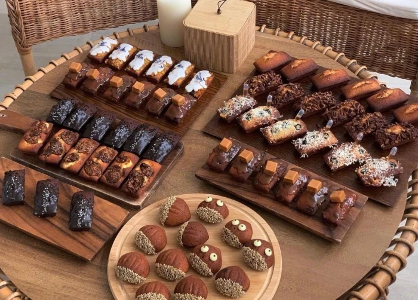

一·所需材料：高筋面粉300g 酵母：3-4g 细砂糖：40-50g 盐：4-5g 鸡蛋：1个 牛奶：160-180毫升 黄油：30-40g 蛋糕制作教程
二·工具准备：干净的搅拌盆、硅胶刮刀、擀面杖、保鲜膜、烤盘、烤箱
三·前期准备：将所有材料准确称重，面粉过筛一遍，鸡蛋打散备用
四·搅拌面团：将面粉、糖、盐拌匀，加鸡蛋液、牛奶简单搅拌成絮状，再加化开的酵母液揉面。 分2-3次加黄油，揉至面团光滑有弹性，能拉出薄膜
五·发酵:放入容器，封保鲜膜，放温暖处发酵1 - 1.5小时，面团体积变大2-2.5倍。 取出排气，整形为圆形或吐司形，放烤盘二次发酵40 - 50分钟，体积再变大1.5-2倍
六·烘烤:烤箱预热至180 - 200℃，放入面包坯烤20-25分钟，上色过快可加盖锡纸，烤好后取出晾凉
七·注意事项：控制好酵母温度，注意环境湿度
新鲜出炉的手工面包